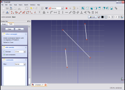
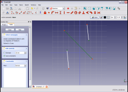

|
| Umístění Menu |
|---|
| Sketch → Sketcher constraints → Constrain symmetrical |
| Pracovní stoly |
| Náčrt, Návrh dílu |
| Výchozí zástupce |
| Nikdo |
| Viz také |
| Vazba rovnoběžnosti |
Contents |
Popis
Vazba souměrnosti zajistí, že dva vybrané body jsou souměrné podle zadané přímky, např. oba vybrané body budou ležet na kolmici k přímce procházející oběma body a budou stejně vzdálené od přímky. Případně oba body mohou být souměrně uloženy ke třetímu bodu.
Postup

Vyberte v náčrtu dva body (vrcholy) a přímku. Vybrané body a přímka změní barvu na tmavězelenou.

Klikněte na ikonu Vazba souměrnosti  v nástrojovém pruhu Náčrtu nebo vyberte položku Vazba souměrnosti ze submenu Vazba souměrnosti z menu Náčrtu (nebo Návrh dílu).
Tím aplikujete vazbu na vybrané položky.
v nástrojovém pruhu Náčrtu nebo vyberte položku Vazba souměrnosti ze submenu Vazba souměrnosti z menu Náčrtu (nebo Návrh dílu).
Tím aplikujete vazbu na vybrané položky.
Toto je geometrické vazba a nemá žádné parametry.
{kind=link}
{kind=link}
{kind=link}